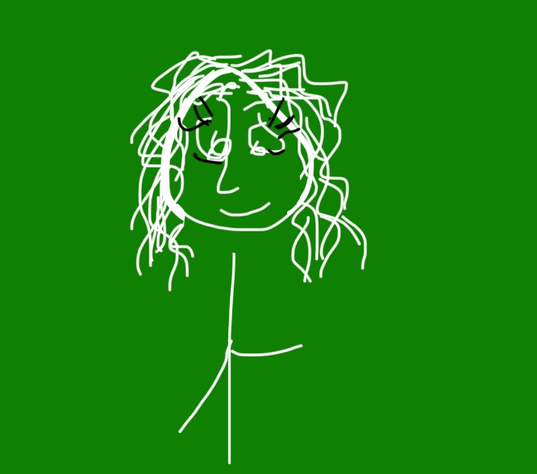

let me spin u a yarn
 i had a blog before this one on blogger, which i had made because i was frustrated by the fact i couldn't possibly understand how to create my own html. my first post on there was actually about that, you could check it out here.